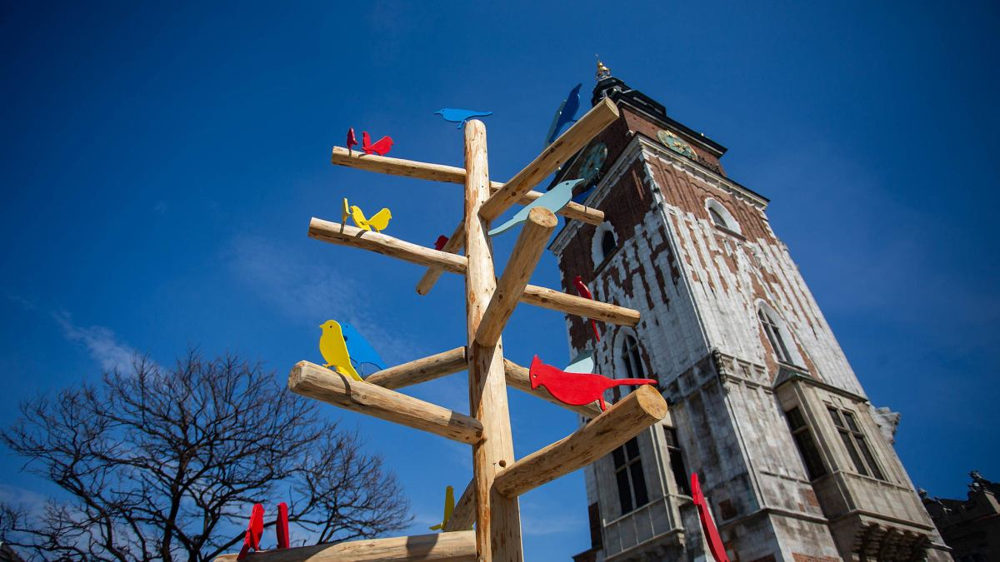

Witamy na stronie poświęconej Wielkanocy. Wielkanoc to jedno z najważniejszych i najpiękniejszych świąt w tradycji chrześcijańskiej. Łączy w sobie głęboką symbolikę religijną, bogactwo dawnych obrzędów oraz niezwykłe dziedzictwo kulturowe, które przez wieki kształtowało tożsamość wielu regionów Polski i Europy.

Historia Wielkanocy: Korzenie Wielkanocy sięgają pierwszych wieków chrześcijaństwa i są związane z upamiętnieniem zmartwychwstania Jezusa Chrystusa. Święto to nawiązuje również do żydowskiej Paschy, symbolizującej wyzwolenie i nowe życie. Z biegiem czasu Wielkanoc wzbogaciła się o liczne tradycje ludowe, które różnią się w zależności od regionu, ale zawsze niosą przesłanie odrodzenia, nadziei i radości.
Tradycja Emaus i drzewka Emaus Jednym z najbardziej charakterystycznych zwyczajów wielkanocnych, szczególnie w południowej Polsce, jest odpust Emaus. Organizowany w Poniedziałek Wielkanocny, nawiązuje do biblijnej historii spotkania uczniów z Jezusem w drodze do Emaus. Nieodłącznym elementem tego wydarzenia są kolorowe „drzewka Emaus”–ozdobne gałązki lub konstrukcje dekorowane wstążkami, kwiatami i figurkami. Symbolizują one odradzające się życie oraz radość ze Zmartwychwstania. Tradycja ta zachwyca zarówno mieszkańców, jak i turystów swoją barwnością i unikalnym klimatem.